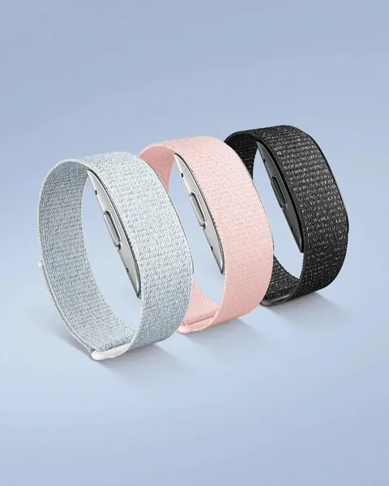
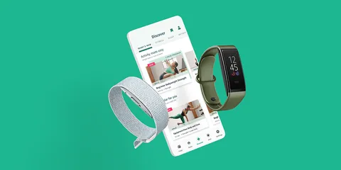

Amazon Halo
I joined Halo’s founding team in 2018 and was the one product owner accountable for Body, Tone and Movement. I set what each model was trained and checked against, ran the loop from science to interface to customer, and took each one to launch, in 2020 and 2021.
- Launched
- August 2020Amazon ended Halo in 2023.
- Products I led
- Body, Tone and Movement
- Price
- $99.99, then $3.99 a monthThe band came with 6 months of membership.



Decisions
A band, an app and a membership
In 2018 I joined the founding team of a secret Amazon project: a health band with no screen, an app and a membership.
The band was Amazon’s first health wearable. Halo measured activity and sleep, body fat from phone photos, and how the wearer’s voice sounded to others. I led product management for three Amazon Halo products: Body and Tone, which launched with Halo in August 2020, and Movement, which followed in June 2021.
The band, the phone and the cloud
The Halo Band carried a motion sensor, a heart-rate monitor, a temperature sensor and two microphones.
A button turned the microphones off. Amazon said the battery lasted up to 7 days, or up to 2 days with Tone on. Activity and Sleep came from the band’s sensors. The work of Body, Tone and Movement was split across the band, the phone and Amazon’s cloud. Amazon’s Halo blog said most Halo teams had five to eight people, each owning part of the band’s software, the phone apps or the cloud.
| Product | Captured by | Analyzed in | Deleted |
|---|---|---|---|
| Tone | The band’s microphones | The phone | Audio, after analysis; only a summary reached the cloud |
| Body | 4 photos from the phone’s camera | Amazon’s cloud | Photos, from Amazon’s servers within 12 hours |
| Movement, from 2021 | 5 exercise videos from the phone’s camera | Amazon’s cloud | Videos, shortly after processing |
The privacy rules
Amazon said no one at Amazon viewed the scan images, and they were not used to improve its machine learning. Halo kept health data in a profile separate from the Amazon account. Partners behind Labs, the app’s partner programs, received only aggregated, anonymized data unless a Halo member agreed otherwise.
What a member saw in the app
Everything a Halo member saw appeared in the app, whose home screen held four tiles: Activity, Sleep, Tone and Body.
| Feature | What a member saw |
|---|---|
| Activity | Points for movement, more for higher intensity, toward a goal of 150 a week; 1 point off for each sedentary hour beyond 8 in a day |
| Sleep | A score out of 100 each morning, with the night’s time in each stage of sleep |
| Body | A body fat percentage and a 3D model of the member’s body, from a phone scan |
| Tone | Words for how the wearer’s voice sounded to others, from speech analyzed on the phone |
| Labs | Health challenges from partners such as Headspace and Orangetheory Fitness |
| Movement, from June 2021 | A score out of 100 for mobility, stability and posture, from 5 movements filmed on the phone |
The band came with 6 months of membership; after that, membership cost $3.99 a month. Without it, the band still counted steps, sleep time and heart rate.
Checked at first use and weeks later
For each of the three AI products, I set what its model was trained and checked against.
We measured the value members saw in a result at first use, and again at about 2 and 4 weeks. Groups of people new to the product gave fast feedback on each change. What people perceived in the lab and at home differed sharply, so we judged the models on real-world data.
| Product | Trained and checked against | How often members used it |
|---|---|---|
| Body | Clinical X-ray (DXA) scans of body fat | A scan every 2 weeks |
| Tone | Listener panels’ ratings of how recorded voices sounded | Short samples of speech through the day |
| Movement | The score a fitness expert would give, later checked against motion capture and 13 clinical tests | An assessment every 2 to 4 weeks |
Launch, reviews and a senator’s letter
Amazon announced Halo on 27 August 2020, with invitation-only early access in the United States.
Because of the COVID-19 pandemic, Amazon introduced Halo with animated films. On 14 December 2020, Halo went on sale to all US customers.
On 10 December 2020, The Washington Post’s reviewers called Halo the most invasive technology they had tested. The next day, US Senator Amy Klobuchar wrote to the US Secretary of Health and Human Services about it. Amazon replied that Body and Tone were optional, and that it had no access to scan images or speech samples.
The business in one view
The band cost $64.99 in early access, then $99.99, each with 6 months of membership. From December 2020, the US life insurer John Hancock offered new members of its Vitality PLUS program a free band with 3 years of membership.
How Halo grew after launch
In December 2020, Amazon said two features came from early-access feedback: Insights, which showed trends such as peak periods of positivity, and on-demand workouts.
| Date | What changed |
|---|---|
| March 2021 | An opt-in skill let members ask Alexa about their Halo data |
| June 2021 | Movement, announced on 3 June and on members’ phones from 30 June |
| August 2021 | Body scans in smaller rooms: members could stand about 1 to 2 feet (30 to 60 centimeters) closer |
| September 2021 | Halo View, a band with a color screen and no microphone, with Halo Fitness and Halo Nutrition |
| September 2022 | A bedside sleep tracker with no camera or microphone, built by another Amazon team |

The end of Halo, and what lasted
Amazon ended Halo in 2023, and its devices and app stopped working on 1 August 2023.
Both validation studies were published in npj Digital Medicine, a Nature Portfolio journal: Body’s in June 2022 and Movement’s in September 2022. An independent test of Body was published in September 2022. Two of the six US patents from the Tone work that name me as an inventor were granted after Halo ended, in October 2023 and March 2026.